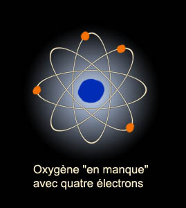
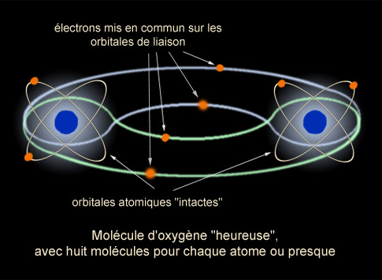

|
|
Navig.
page/section


_____
|
|
Pages soeurs
I, A propos des liants
II, Bulles, siccativ., struct. élec.
III, Caséine, phosphore, dissociation
IV, Les orbitales
V, L'aérogel
VI, Polarisation de la lumière
VII, Sfumato et diffusion Rayleigh
VIII, Les interférentielles
IX, Dextrine, farine et chiralité
X, L'ocre bleue
XI, Les métamatériaux
XII, Le jaunissement
XIII, Laser etc.
XIV, L'holographie
XV, L'holographie numérique
XVI, Extérieur, intérieur, chaux
XVII, L'électrolyse et les ions
XVIII, L'électricité, un peu plus loin
XIX, Oxydation, métaux
XX, Les échelles
XXI, Nature et évolution des résines
XXII, Le mouillage pigmentaire
XXIII, La molette
XXIV, Blanche neige
XXV, Lumière et matière
XXVI, Magnétisme
XXVII, Ambre et vieilles branches
XXVIII, L'origami miroir
XXIX, Le feu
XXX, Peau du métal
XXXI, La ville en un souffle
XXXII, Oxyder des matériaux
XXXIII, Ocre bleue, une solution
_____
|
Copyright © www.dotapea.com
Tous droits réservés.
Précisions cliquer ici
|
|
| |
|
|
Les
dialogues sur la physique-chimie
appliquée
aux arts
Chapitre II
Bulles,
siccativation
et structure électronique
|
 |
dial dial
dial
English
text

Ce chapitre II des
Dialogues de Dotapea
est
une discussion entre Jean-Louis, physico-chimiste au CNRS, et un
candide, Emmanuel. Anne, savonnière et cuisinière,
a aussi joué un rôle.
Les personnages sont réels, la
discussion aussi. Elle peut reprendre à tout moment et ce texte peut s'allonger.
|
Emmanuel :
Si j'incorpore de petites bulles d'air dans ma peinture (à savoir
d'abord comment faire), est-ce qu'elle a une chance de
siccativer plus
rapidement ?
Tu sais, cette question est essentielle en peinture, surtout de nos jours
parce que les peintres rechignent de plus en plus à utiliser des oxydes de
métaux lourds comme "siccatifs", comme oxydants. Remarque qu'il y a la
solution des huiles soufflées, mais leurs applications pour le moment sont
uniquement déco ou industrielles. Je ne sais pas trop pourquoi. A ton avis ?
Jean-Louis : Comment incorporer de petites bulles d'air dans ta
peinture ? En la fouettant avec un "agent moussant". La pâte a-t-elle une
chance de siccativer plus vite ? Oui et non. Si on parle de peinture à
l'huile, la peinture en contact avec l'oxygène va effet sécher plus vite.
Mais le volume d'oxygène d'une petite bulle
étant faible, ça n'ira sans doute pas très loin. Et ensuite, la structure
alvéolaire de la peinture va considérablement freiner la diffusion
ultérieure de l'oxygène atmosphérique. Et l'évaporation des solvants. En
tout cas, c'est ce que je crois. Il faudrait essayer....
Emmanuel : Mais qu'est-ce que c'est, cette chose qui mousse, cet "agent
moussant" ? Et puis au fait, à
propos de siccativation, une question brute : pourquoi l'oxygène et pas un
autre élément ?
Jean-Louis :
"L'agent moussant" est un produit que
l'on rajoute quand on veut faire des
émulsions ou des mousses très stables. Il empêche la
coalescence des bulles.
Par exemple pour certains feux d'hydrocarbures les pompiers utilisent de la
mousse pour
éteindre, pas de l'eau. Et ils mélangent de l'agent moussant à leur eau. A
la base, c'est un bête savon, genre Mir, mais on en trouve des spécifiques
pour le béton (fabrication du béton cellulaire), les plastiques (pour faire
des mousses), les dentifrices, etc... A l'opposé, on a des agents
anti-moussants que l'on met par exemple dans les lessives pour machine à laver.
Je ne connais pas de produit "simple" que tu
pourrais essayer. Je regarde ce que je trouve....
Sur ta question "pourquoi
l'oxygène", c'est le seul composé "actif" de l'air.
L'azote est
essentiellement inerte aux températures habituelles. La vapeur d'eau peut
jouer un rôle pour certaines peintures, surtout les peintures "à l'eau",
naturellement.
|
|
Bulles, oxygène et siccativation
|
|
Emmanuel :
Pourquoi par exemple avec les
siccatifs pour l'huile, est-ce l'oxygène qui vient se coller sur les doubles
liaisons (voir La saturation) et pas le métal lourd ou n'importe quoi d'autre ?
Jean-Louis :
Pour des raisons chimiques. Certaines réactions sont possibles, d'autres
pas, et toutes ne produisent pas un effet "intéressant". Un
métal réagira
avec un acide pour donner un
sel, avec l'oxygène pour donner un oxyde, mais
ne permettra pas de former des liaisons intermoléculaires. L'oxygène, lui,
peut être "pontant", c'est à dire qu'il peut lier chimiquement deux
molécules. D'où son pouvoir siccativant, au moins en partie.
Il peut aussi servir
d'activateur, l'oxydation de deux molécules les rendant réactives et aptes à
se lier entre elles. La présence de métaux (par exemple le manganèse dans des médiums
ou des siccatifs du genre "de Courtrai") est souvent liée à leur effet
catalytique. Ils favorisent les réactions d'oxydation/polymérisation sans
s'en trouver prisonniers.
Emmanuel :
Pourquoi un élément est-il plus "pontant" qu'un autre ?
Jean-Louis : C'est dans sa nature
chimique, donc in fine dans sa structure électronique. Si je rentre
dans ces détails, ça va devenir très technique...
Emmanuel :
Mais quels sont les éléments que tu identifierais comme les plus "pontants"
?
Jean-Louis : Alors là... Ca dépend en fait
du système considéré. Si tu as déjà utilisé des colles époxy, un des tubes
contient une résine (un polymère), l'autre contient un durcisseur. Le
durcisseur établit des ponts chimiques entre les molécules de résine. Pour
les peintures à l'huile, c'est l'oxygène qui ponte ou aide à ponter.
Emmanuel :
D'accord. Mais en termes d'éléments simples ?
L'oxygène est pontant dans l'huile entre
autres, c'est d'accord, mais dans d'autres contextes, est-ce que d'autres éléments
simples peuvent jouer ce type de rôles ? Je ne sais pas, du carbone, du
soufre, du phosphore, de l'azote ??? Mais peut-être ne s'agit-il pas des
mêmes échelles structurelles ?
Jean-Louis : Ca devient franchement
chimique et pas forcément simple. La chimie organique réalise précisément
des assemblages plus ou moins bizarres et exotiques entre différents
éléments.
|
|
Avec
quelles pierres bâtir le pont ?
|
|
Le principe de base est que les
propriétés chimiques des éléments dépendent de leur structure électronique,
notamment des électrons dits "des couches externes". Ces couches externes
sont formées des électrons les moins liés au noyau et occupent des "couches"
généralement incomplètes. Cette incomplétude est énergétiquement défavorable
et pousse les éléments à engager des liaisons électroniques (donc in fine,
chimiques) avec d'autres éléments.
|
|
IMPORTANT Ces
éléments sont développés dans le
chapitre IV |
|
L'oxygène n'a
que quatre électrons dans sa couche externe mais aimerait en avoir six. Le
gaz oxygène résout ce problème en associant deux atomes d'oxygène dans une
molécule de di-oxygène (celle que l'on respire sans le savoir, M. Jourdain
!). Cette molécule est formée par "la mise en commun" de deux électrons qui
fait que techniquement, chaque atome en possède six de temps en temps et est
donc heureux.

...et une
association beaucoup plus heureuse :

Il est évidemment possible que
des éléments différents s'associent, par exemple un oxygène et deux
hydrogènes, ça donne de l'eau, deux oxygènes et un carbone, ça donne du gaz
carbonique. Ces exemples sont des molécules simples, mais on peut évidemment
faire des choses très compliquées. Cependant, les choses compliquées se font
généralement de façon... compliquée et ne se réaliseront pas spontanément (ou
presque) sur une toile à peindre par exemple.
Donc oui, le carbone, l'azote, le
soufre peuvent potentiellement se lier et "ponter", mais pas toujours dans
des conditions réalistes. Par exemple le soufre ponte les longues chaînes
polymère du caoutchouc naturel, mais seulement si on chauffe le mélange.
L'azote pourrait techniquement oxyder des huiles ou des métaux (il n'a que
cinq électrons dans sa couche externe) mais l'atome d'azote est engagé dans
la molécule d'azote N2 qui est extrêmement stable, et on ne peut
pas facilement obtenir de l'azote atomique. Un des défis que la chimie
moderne a longtemps cherché à relever était précisément celui de l'obtention
d'azote atomique à partir de l'air ambiant pour fabriquer des engrais
azotés.
Emmanuel : Existe-t-il des
métaux
"pontants" ? J'ai la vague impression qu'ils rechignent un peu en général.
Jean-Louis : C'est techniquement possible.
On sort un peu de mon domaine...
Emmanuel : En ce qui concerne les huiles à peindre, pourquoi les oxydes de
certains métaux n'ont-ils pas d'effets siccatifs ? Par exemple le fer semble
inopérant mais pas le manganèse ni le cobalt pourtant très proches par leur
poids atomique et leur électronégativité.
Jean-Louis : Comme précédemment, ça tient
à leur nature chimique, donc à leur structure électronique. Un électron de
plus ou de moins peut faire une énorme différence. Pour ce qui est de
l'activité catalytique, c'est plus compliqué et je ne sais pas si tout est
même compris. Par exemple, le platine est souvent utilisé comme catalyseur,
pourtant c'est un métal noble donc quasi-inerte chimiquement. Son activité
ne passe a priori donc pas par ses électrons. Mais je ne suis pas expert en
catalyse...
|
|
L'oxygène dans tous ses états |
|
Emmanuel :
J'en reviens aux savons. On utilise
pas mal en peinture décorative - voire "artistique" - le savon noir,
notamment pour réaliser des "détrempes" et des émulsions (lire
recette), mais aussi pour
nettoyer les pinceaux (passage in Les
nettoyants). Je te copie-colle un extrait de dialogue avec
Anne :
"J'émets
une hypothèse un peu pachydermique : le savon noir agirait fortement sur
les esters parce qu'il serait très alcalin.
Donc pas surgras Oui !
Cela expliquerait peut-être l'existence de savons noirs communs beaucoup
plus chargés en huile (genre 50%, que l'on trouve dans les quincailleries),
pour un usage plus banal comme le nettoyage des sols, et à côté, des versions plus
"orthodoxes" à 3%."
Comment ça
se passe pour l'agent moussant ? Dans quels cas doit-il être surgras ? Ou
pas trop gras dans d'autres cas ? A quoi ça sert selon toi, comment un
artiste peut-il gérer ces paramètres ?
|
|
Le
mystère du savon noir |
|
Jean-Louis :
N'étant pas de la partie, je ne connais pas grand chose aux savons, même
surgras. Le principal usage du savon surgras semble être de préserver la
peau des fesses des jolies filles et des bébés. Rajouter trop de gras dans
un savon finira par faire de la peinture à l'huile.
Emmanuel :
Comme conclusion temporaire en forme de question, si un peintre utilisant le
savon noir dans sa peinture (cf. par exemple
recette d'émulsion)
lit ce texte, il est chaleureusement invité à nous dire pour quelle(s)
raison(s) :
*
pour saponifier une huile, un peu comme dans le cas de la cire saponifiée
(voir recette), mais d'une
manière beaucoup plus douce. Il s'agirait d'obtenir une sorte d'émulsion.
*
pour créer un effet de surface (donner du "tendu" ?)
*
pour d'autres raisons.
Amis savonnistes, merci d'avance !
|
|
La
savonnerie requiert bien souvent les mêmes huiles que celles que les
peintres utilisent communément. Des informations à usages multiples ont
été intégrées dans l'article La
saponification/ |
|
La suite : chapitre III |
Retour
début de page
|
|

 Communication
Communication


|
|